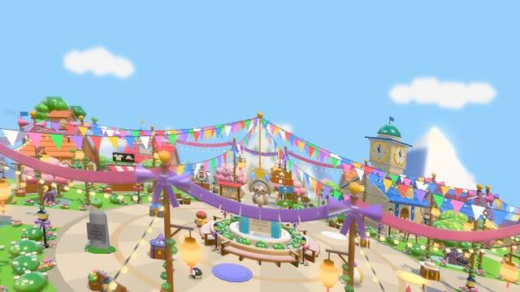
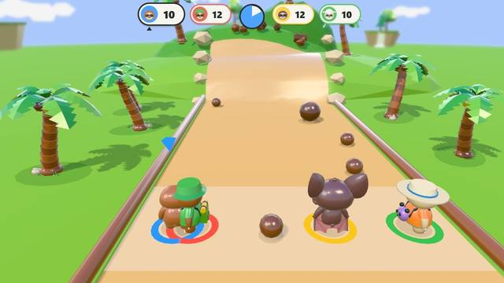

Free online games for kids, nothing to download
A guide for parents · October 2026
Sloth Jam is a free game for kids that runs in a web browser. Open the page and play: there is nothing to install, no app store, and no ads between rounds. Inside is a whole island of games, made for ages 6 and up, that grown-ups enjoy playing too.

What kids can play
- 64 party games, one minute each. Catch fruit, pop moles, dodge coconuts, play pond hockey or tag. A match is three short rounds against kind computer players.
- A kart race. Sloth Kart has five tracks, from a gentle loop round town to a rainbow road over the clouds.
- A cozy island. Fish, garden, cook, decorate a house, sail and catch fireflies, with no timer and no way to lose.
- Places to explore. A coral reef, the Moon, a skatepark island, caves under the town and an island in the clouds. Nothing out there can hurt your sloth.
- Dress-up. Earn outfits by playing, from pirate to wizard, and the town plays along.
- A story in pictures. Nine chapters told without words.
What “free” means here
Many free games for kids pay for themselves with ads, timers or paid random prizes. Sloth Jam has none of those: no ads, no loot boxes, no limited-time offers, no streaks that break, and never pay to win. Every game is free while Sloth Jam is in early access. Optional founder packs help fund the game and give cosmetic rewards only, behind a grown-up gate.
What you need
- Any web browser. A computer, Chromebook, phone or tablet. Go to slothjam.com/play.
- Full screen, like an app. On a phone or tablet, choose Add to Home Screen in the browser menu.
- Or an app, if you prefer. Sloth Jam is also on Google Play and the Amazon Appstore for Fire tablets.
- A grown-up, once. A parent signs in with a code sent to their email before the first game. A child never signs up.

Easy for young kids
Every game uses one stick and one button, and play is pictures and numbers, so a child who can’t read yet learns a game by watching. Rounds last a minute, so stopping is easy. More on that in our guide to no-reading games for 6 year olds.
Safe by design
Chat is kind words picked from a short list, so no names, ages or numbers get through. Online play with other families is in early testing and stays off until a grown-up turns it on. The game has no ads, no tracking and no cookies. The parent’s safety checklist goes through each point.
Questions parents ask
Is it really free?
Yes. Every party game, the kart race, the story and the island are free while the game is in early access. There are no ads.
Does it work on a school Chromebook?
It runs in Chrome like any web page. Schools can read Sloth Jam for schools and the one-page privacy summary for IT staff.
Can the whole family play?
Yes. Pass one device around in the Family Cup, and everyone gets their own sloth. See family party games for kids and parents.